LOC IQ
Know the city
you're in.
City demographics for where you are, from the U.S. Census Bureau, for iPhone, iPad, and Apple Watch.
Open the app and your city is there: its population, income, households, home ownership, and education beside its outline, with the cities next door a swipe away.
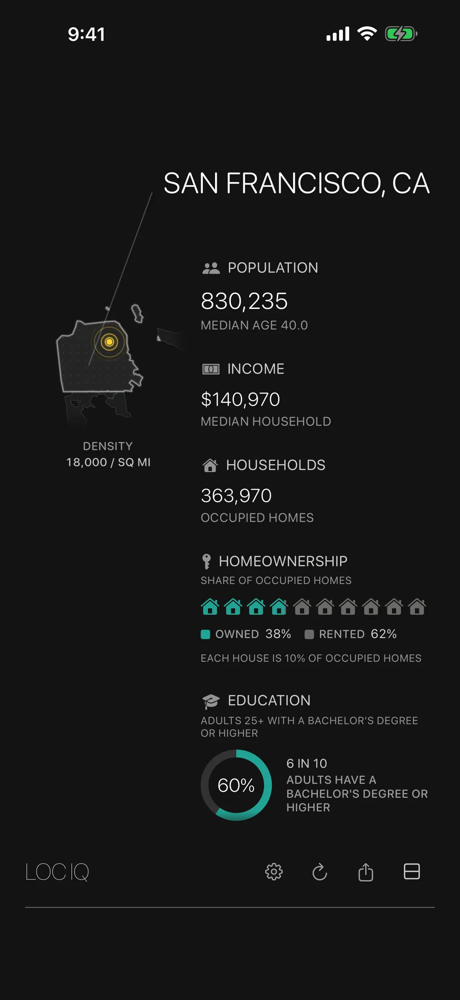
Your city,
on one quiet screen.
LOC IQ shows the U.S. Census profile of the city, town, or census-designated place you're in. No searching, no maps, no clutter: open the app and your city is there.
Built on the Census Bureau's American Community Survey 5-year estimates for 2020–2024, with city outlines from its boundary service.
What it shows:
Details:
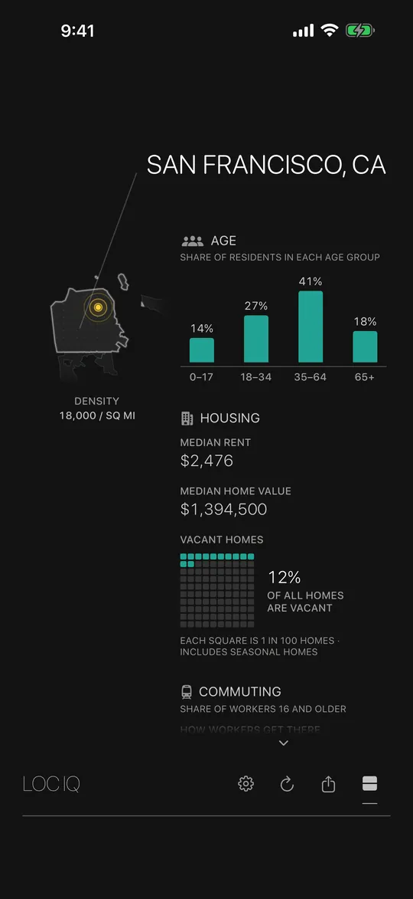
iPhone, iPad & Apple Watch
Click any thumbnail to inspect at actual size.

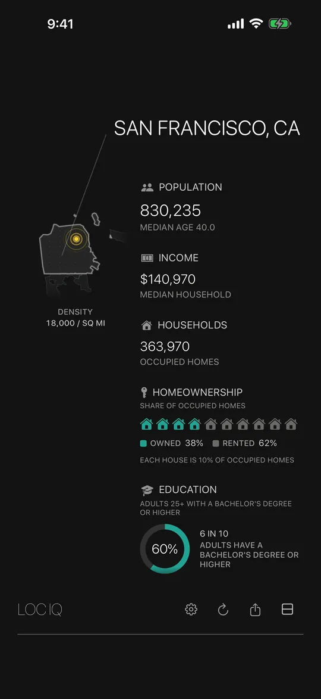

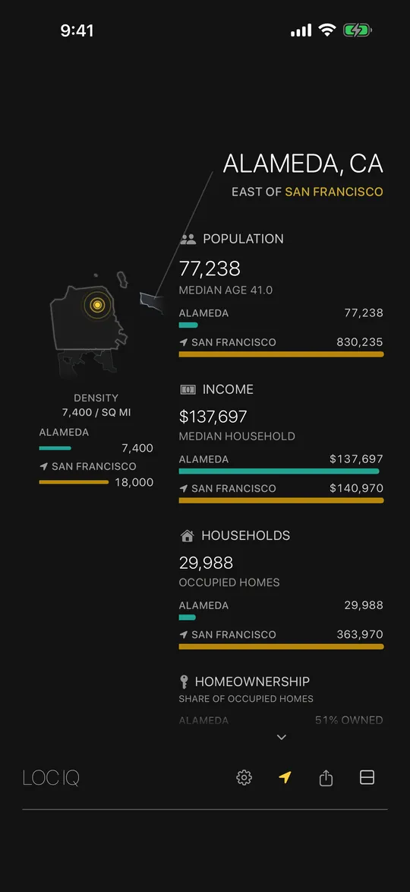


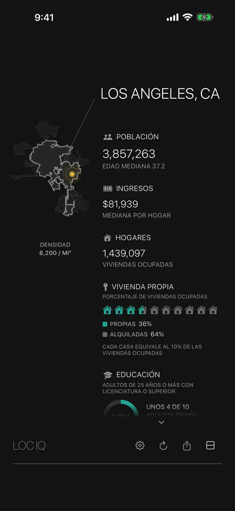

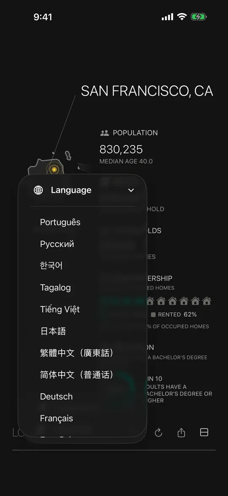

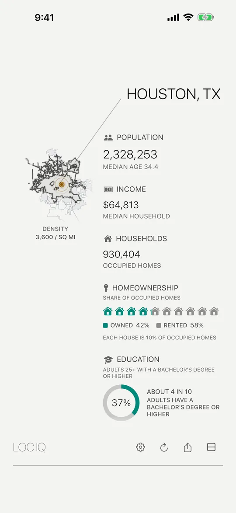

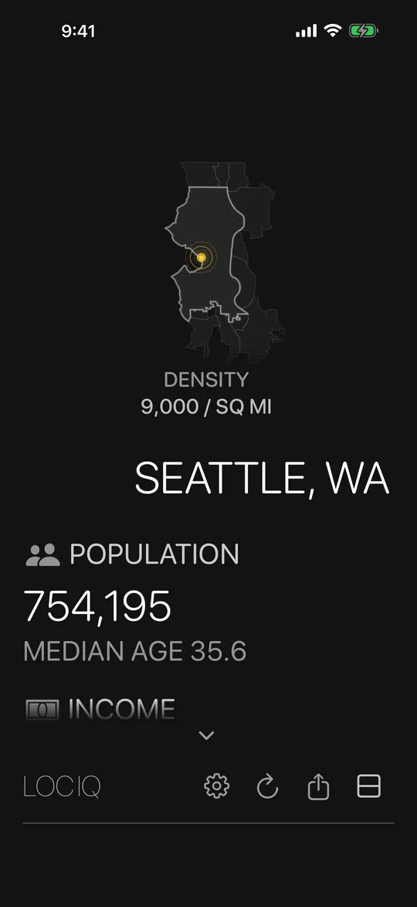

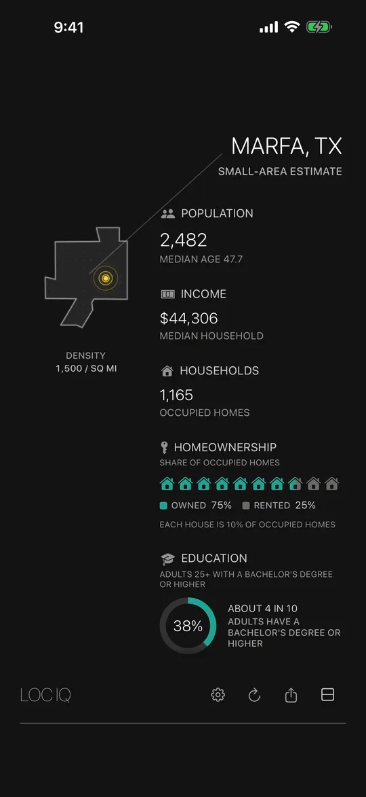

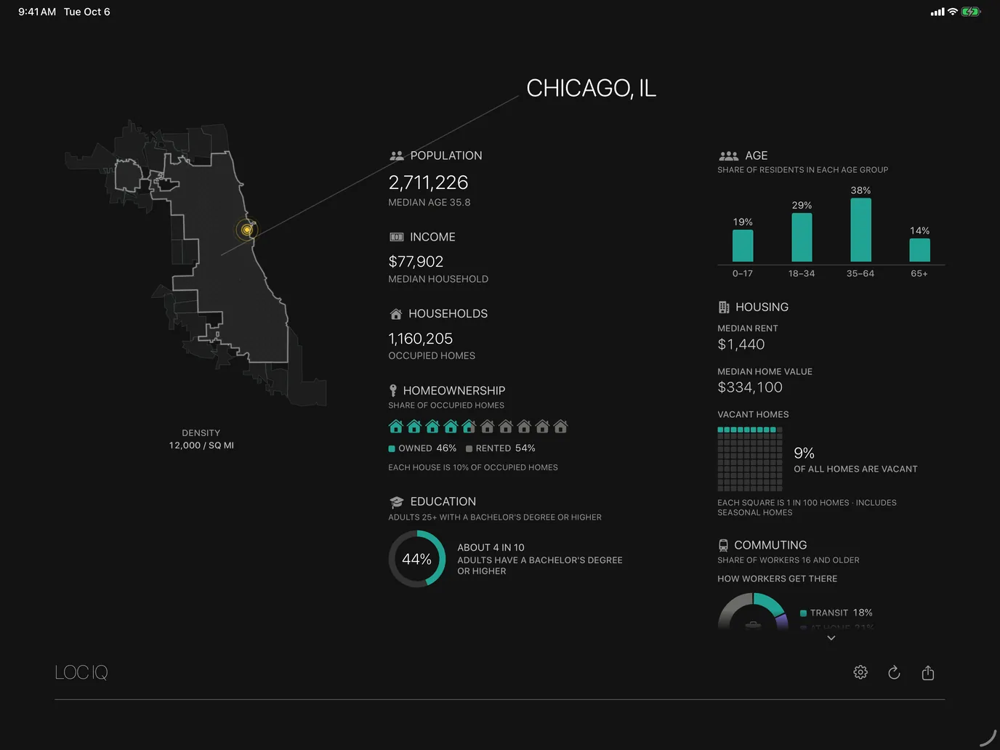

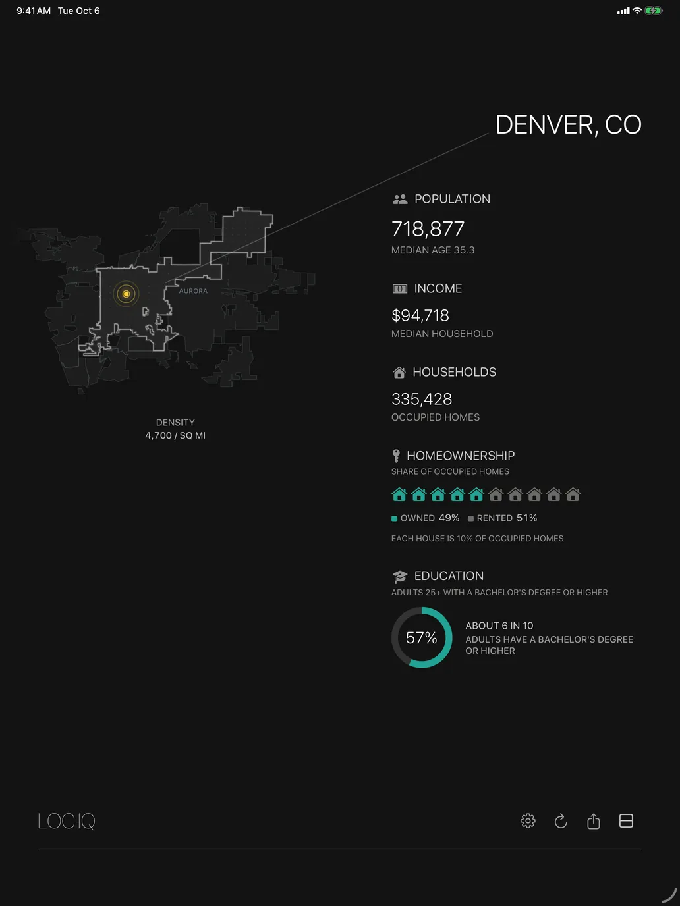

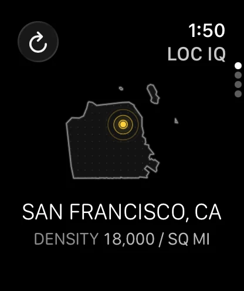

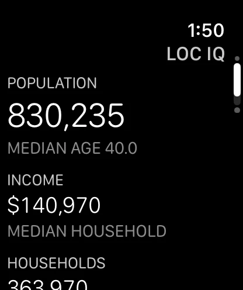

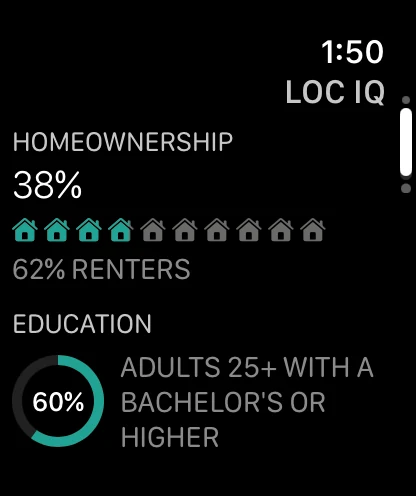

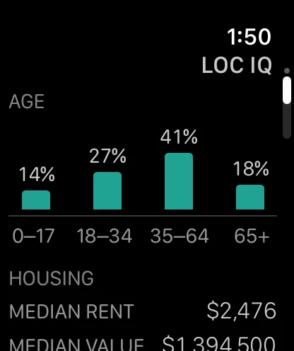
Supported Platforms
-
iPhoneiOS 16 or later
-
iPadiPadOS 16 or later, with the details beside the summary in landscape
-
Apple WatchwatchOS 10 or later, on its own and on your watch face
-
Zero TrackingNo account, no ads, no analytics. Your location is used only to find your city.
Available Languages (12)
- English
- Español
- Français
- Deutsch
- 简体中文
- 繁體中文
- 日本語
- Tiếng Việt
- Tagalog
- 한국어
- Русский
- Português